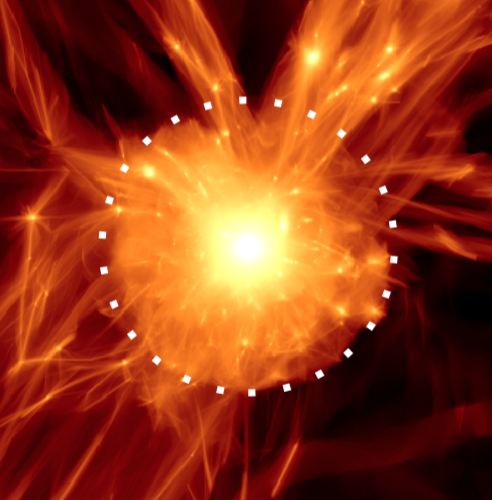
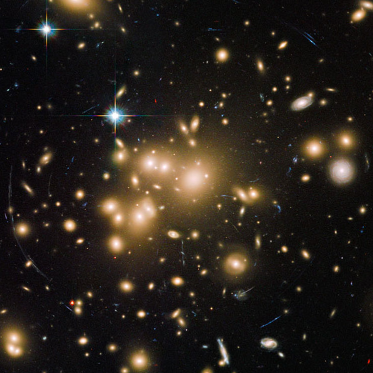
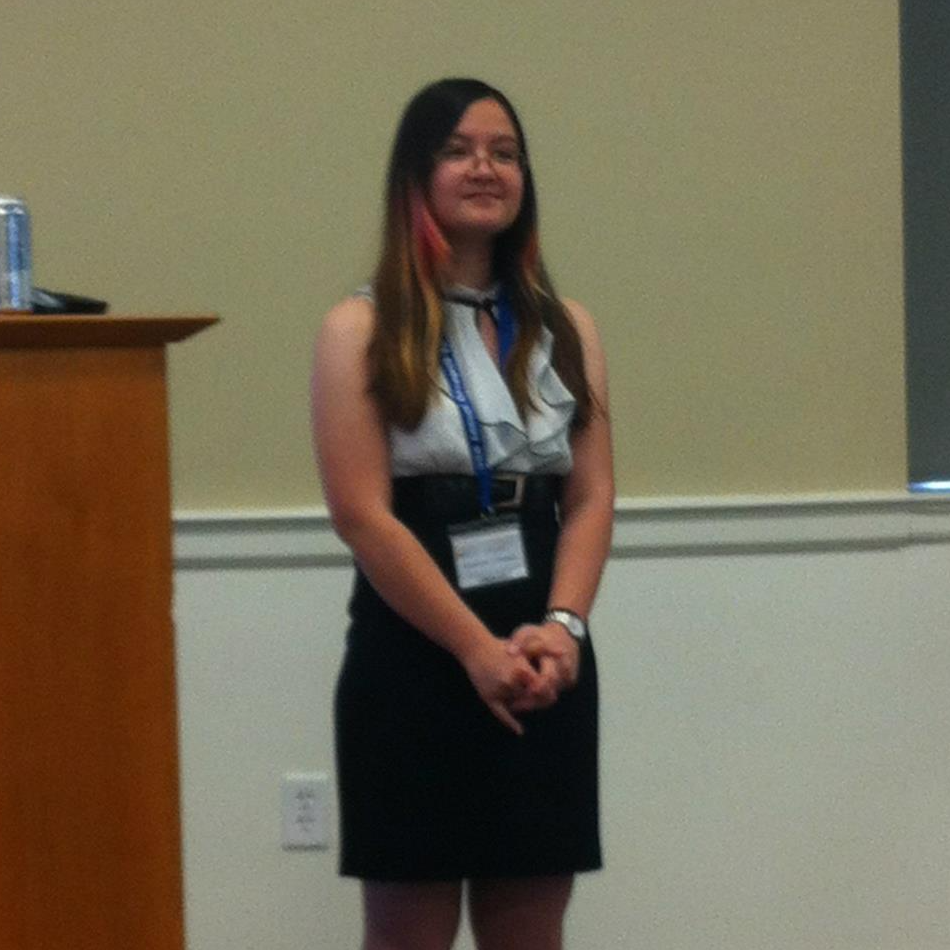

My thesis work is on the formation of galaxy halos. The galaxies we see reside in larger dark matter halos, and these halos grow by accreting more dark matter. As we cannot directly observe dark matter directly, I will use the distribution of satellite galaxies as a probe of dark matter accretion. My research combines theoretical simulations and observational data to learn about galaxy halo formation & evolution.

Simulated dark matter density around a galaxy halo; the dotted line where matter is piling up is the splashback radius (More+ 15)

Hubble Space Telescope image of galaxy cluster Abell 1689
Galaxy Clusters
I also resarch galaxy clusters using radio interferometric data with Prof. Dan Marrone at the University of Arizona. I analyzed Sunyaev-Zel'dovich data of galaxy clusters for the Local Cluster Substructure Survey (LoCuSS) which was used in estimating scaling relations between different observable properties, including the cluster gas and stellar contents (Mulroy et al. 2019). I am also working with data from the Massive Distant Clusters of WISE Survey (MaDCoWS; see e.g., Gonzalez et al. 2019) to determine scaling relations between cluster mass (which is difficult to measure) and cluster richness (which is much easier to measure) by running models on local supercomputers.

Presentation about M dwarf stars at the University of Virginia Undergraduate Research Network Symposium (2013). I went on to sweep all 3 science awards.